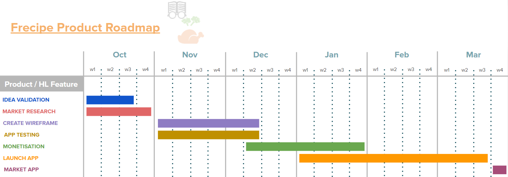

Please select an option from the menu.
Stanton Wightwick – S3819611
I’m 26, hail from Melbourne CBD. I am a huge basketball and combat sports fan, having played the former most my life and also competed in the latter a couple of times. I also have an unhealthy obsession with watches (save your wallet, do not get into this hobby!!) My interest in I.T has definitely been amplified through my full time job as a banker, and seeing the industry’s focus shift to improvement in technology, systems etc. Currently, (which intro to RMIT has helped me realise) I enjoy more so the front end development/software dev side. I am drawn to ‘ease of life’ type applications and nicely designed, interactive interfaces. I have no formal education, my minimal I.T skills are mostly self-taught (Excel, VBA, HTML/CSS, Python) either job necessity or through websites such as Udemy, EDX, YouTube etc. I’m excited to work with The A(12) Team, and can’t wait to see what we come up with!
Jenna Wenn - S3816643
My name is Jenna Wenn my email is jennawenn7@gmail.com and my student number is s3816643. My nationality is Australian, British and Irish. My culture is Australian. I have completed year 12 and was awarded my Western Certificate of Education, I also have a Certificate II in Sampling & Measurement and my Certificate III in Business Administration. I have very basic language knowledge of Indonesian and Japanese. I love anime, gaming and almost every fantasy movie ever from Harry Potter to Lord of The Rings. I moved from Perth to Brisbane and have been to Japan once but would like to go back next year for the 2020 Olympics. I also do recreational shooting at a range though I’m not good.
Cooper Hawtin – S3682074
Hi! I’m Cooper Hawtin, a 20 year old Australian IT enthusiast who is on the verge of completing their Associate’s degree in Information Technology. I started studying at RMIT mid-year back in 2017 about 6 months after finishing my Year 12 VCE studies. I can speak fluent English and Italian. I gained an interest in IT when I decided to build my first gaming PC. My friends had convinced me to move from console to PC after school had finished so I started to educate myself to know what I was getting into. After countless hours of YouTube crusades, I worked up the courage to build my first PC. Building a PC sparked an interest in IT for me. Months after it had been built I spent a great majority of my time doing nothing but study how computers work from hardware to software. I got the point where I felt confident enough to study it officially at university. And here I am over 2 years later about to complete my degree!
Samuel Everson – S3816940

I’m 27, live on the northern end of the Gold Coast. I have 2 daughters and a spouse. I like tinkering with things like motors, computers and various other gadgets (though I’m still learning a lot and am not very good!). I enjoy the idea of software engineering though have very little experience in it. In the same boat I also like database design and implementation. Unfortunately other than a Diploma in IT General I have no formal experience in IT but have self-taught a range of IT skills from building desktop PC’s and servers, VBA, HTML/CSS and database integration using MySQL. I’m very happy to be a part of The A(12) Team and am looking forward to working on this project with the team!
Interview with an IT Professional
Andrew - Software Developer
What kind of work is done by the IT professional?
I work as a Software developer for a company that caters towards aged care. I am a part of the developers. The company is small so everyone tends to do a bit more than just what the pure job role is. In my case it may involve product or feature design.What kinds of people does the IT professional interact with? Are they other IT professionals? Clients? Investors? The general public?
As I am a part of the dev team, generally when we're not chatting with each other as to how what we're working on could be implemented best, we are talking to our CTO about what the next feature or project that we are to push forward with; This is usually brought on by requests for new functionality by our existing client or new clients scouting us to produce their next product. When it comes to entirely new projects, we as the developers (usually one of us), will sit down with the client and our CTO in order to lay out the expected functionality and requirements in order to make a proposal for the estimated time for us to work on the project, as well as how much the project is expected to cost for the client. The other interactions that go on for the company usually revolve around marketing or interacting with potential clients or investors, something we the developers generally don't participate in.Where does the IT professional spend most of their time?
While I'm at work, usually I spend most of my time in front of my computer working on new code most of the time, outside of this it can range from bug fixing, feature or product testing, peer programming with others, or brainstorming. Outside of work, I tend to spend time either doing a bit of extra work on anything that has a soonish deadline, just to make sure things stay ahead of schedule. Otherwise I'm usually just relaxing, doing jobs around the place or having fun; Be it hobbies, dates or entertainment.What aspect of their position is most challenging?
Currently the main challenges would probably be the amount of new features that the managers would like to implement vs the code output of the developers, we're trying to keep up as well as make sure that things are as close to bullet proof as they can be before being released in the product. This also coincides with the fact that we have also taken up new clients recently who are looking to us to develop their products.Group Reflection
What went well?
Jenna
Some of us worked really well together. We were able to finish all parts of the assignment on time and build the website.
Jenna
Samuel
For half the team there was good open communication channels despite different time zones and scheduling.Stanton
Great rapport with the team members who were present, able to freely discuss ideas. Organising different parts of the report to complete separately and collaboratively was easy and efficient. In particular, I found the application idea generation and discussion enjoyable and interesting.What could be improved?
Jenna
Attendance. Throughout the duration of working on the project, not all members contributed which made the collaboration portions of the assignment difficult at times.Samuel
If non attendees had better communication regarding their circumstances (busy etc.) it would have at least provided us with better visibility on what was happening and enable us to plan and structure our working model effectively.Stanton
Communication, I think if a consistent level of effort from all involved parties was present we would been able to build a truly impressive report and would have generated even more amazing ideas for the development of the application.At least one thing that was suprising?
Jenna
The difficulty with getting everyone in the group together to work on the application, even with Discord being an effective tool available for all team membersSamuel
Annoyance of Javascript! Difficulty interpreting the industry data. It makes sense what it is, but actually trying to talk about it and extrapolate relevant concepts for the report was difficult.Stanton
While challenges are to be expected, I found I still greatly underestimated to what extent it would be an issue. It is an aspect I will be mindful when considering a potential career as a software developer.At least one thing that you have learned about groups?
Jenna
While echoing my previous answers, the issue of getting everyone to participate was a learning experience for sure.Samuel
The impact that different schedules, time zones and effective communication has. As an I.T professional, there will be times where remote work be required and this project was a good reflection of what can happen when there is a communication breakdown.Stanton
That there will be instances where extra work will be required from individuals to ensure a project is fulfilled if there is a breakdown in communication or collaboration, as these can occur at any stage. It also accentuated the requirement of have everyone and all aspects of the work organised.How well did GitHub work?
All
For those who participated, it worked well. It was definitely a learning curve, a clash occurred once between Samuel and Stan when a push for a particular aspect was attempted, but this was quickly resolved. Overall it kept the work neatly organised and made collaboration efficient and effective. Additionally, it was a great learning experience for the team members who did utilise it.Topic 1: Clouds, Services and Servers
Clouds, Services and servers or Cloud computing is a service made available to users on demand via the Internet from the cloud provider's software/hardware as opposed to being provided from a company's own on-premises software/hardware. The Cloud is a “safe” data storage system where one can conveniently store information, transfer files and receive files amongst other activities. Presently, companies are now working hard on the back-end of cloud storage systems, examples being: Blockchain, Quantum Computing and enhancing their Algorithmic systems. The impact of improved systems is a better overall Cloud experience. Removal of bugs and augmentation of the overall algorithm, should result in users having greater confidence and trust in Cloud, thus leading to an increase in usage. With greater volume of users, comes increased business opportunities. It is possible that companies such as Dropbox, Apple and Google will increase their use of ads and focus more on marketing (as we’ve seen in the past with companies such as YouTube) as the money making contingency is there. The individuals who will most be affected by are existing users and organisations. Career wise, it’s hard to determine how large an impact it will have, but it is possible that it will disrupt the volume and flow of hardware manufacturing. We may see a drop in purchases of hardware such as harddrives and USB drives, as they become increasingly less necessary and less important. Ultimately this would probably negatively affect hardware manufacturing company related positions, but may also create new opportunities for I.T personnel such as programmers, developers, engineers, etc. Not all of us use cloud currently. For those that don’t, it won’t impact us whereas for those that do, cloud is great in a variety of ways as mentioned above such as quick, convenient storage and easy transfer of files. A potential negative is privacy. Whilst secure, cloud systems are not infallible, meaning private documents, photos and videos can be leaked, many examples of such have been reported in the media. Additionally, it is possible that data stored in the cloud is there forever and can not be taken back or deleted. The cloud can be unreliable as hardware faults can cause data loss, especially due to the fact the cloud providers are responsible for maintenance which the end user has little to no control over. On the other hand most cloud providers are structured with redundancy plans to prevent loss of data, often with multi-site operations severely limiting outages and issues caused by localised things like natural disaster. Had the ATO’s storage solution been on the cloud in 2016 they could have prevented a petabyte of data loss and months of system outagesTopic 2: Cybersecurity
Cybersecurity or digital security is the protection of computer systems from theft of Hardware, Software and electronic data. Some of the technology that is improving for Cyber security is; Blockchain, Cloud technology, IoT security, AI and machine learning & application security. All of these technologies are continuously working together and being upgraded to better cyber security. The potential impact of this will be improving cyber security and trying to make it “safe” for users. It will also protect companies who develop apps and work mainly online. People may not be very much affected by these changes due to them not being well known to outside of the IT workforce, but people will have better protection on apps etc. This has the possibility to create more jobs due to the amount of people that use the internet, devices that can connect to wifi and home devices that children may use Apps on. Realistically this won't affect me or any of my family members due to it being the back end of Cyber security. However they can have a little piece of mind that people are working on Cyber security to make using many different devices and apps safer. Considering now days children as young as 5 have their own ipads to play games and watch tv shows that may be streaming on stan or netflix. With family members who have just had children this means that when they’re older my family members can have ease of mind when they allow their children to play on ipads and watch shows, not to mention the world of cyber security is ever changing and it’ll be even more safer for them to use.Topic 3: Autonomous Vehicles
Autonomous vehicles are very similar to current day mainstream motor cars however the key difference is they are ‘driverless’. This is achieved by computer systems programmed to control the vehicle, which has been a big part of vehicles for a long time, but including driver inputs like acceleration, braking and steering. Present day, vehicle autonomy in is still in its infancy, but over the past 5 years or so has made big leaps in development. Vehicle autonomy is part of current production vehicles though on a smaller scale than full driverless autonomy. Functions such as reverse parking assist, emergency responsive braking and even cruise control form part of vehicle autonomy. Each day researchers, manufacturers and engineers are all working towards making the car a driverless experience which can be expected in the future - how far into the future is hard to say but Bentley have already displayed a prototype low speed vehicle that is completely driverless. With this technology advancement would come an array of changes in everyday life. On the good side of change would be increased ability for productivity, comfort of private travel, eliminated risk of driving incidents caused by motorists driving under the influence of alcohol/drugs, more efficient motorways with less congestion (should all vehicles be autonomous and communicate with each other to prevent slow merging traffic, cutoffs, etc.) and eliminated driver fatigue. On the negative side is the risk of system failures such as speeding, failing to brake and/or steer, inability to control the vehicle in case of emergency (assuming there is no manual override) and hacking. The changes brought on by autonomous vehicles would impact all road users including pedestrians. Industries such as transport and logistics along with taxi travel (just to name a few) would be heavily impacted by this technology as both industries revolve around the operation of motor vehicles to transport goods/people from point A to point B. With autonomy taking over, the vehicle operators would no-longer be required in that role (though in the early days the vehicles will likely require an operator). This will affect all of us and our families in one way or another we all use some form of vehicle for either transportation or labour. The effects are hard to judge as this stage but impacts outlined in the above paragraph should be thought about, discussed and understood as the use of autonomous vehicles becomes more prevalent.Topic 4: Robots
Robots are machines designed to perform a task. Modern day robots are computer programmable and are able to achieve an array of tasks depending on their design. Robots are used very heavily in manufacturing along with healthcare, transport, labour and domestic use such as vacuum cleaners. Robotic development is moving more and more in the humanoid space which is developing robots that are more like humans in behaviour and appearance. With robots, greater productivity is achieved as they are able to better perform repetitive and precise tasks with a greater level of accuracy than humans. As they are (generally) programmed to complete a single task, robots are often very good at what they do. Overall, this would greatly impact workers, as it often means redundancy of positions within a business. This has especially been seen over the years in car manufacturing around the globe. On the plus side, should redundancy not be on the table, it does open up the ability for workers to focus on more decision based tasks (providing the robot isn’t good at decision making) which in turn increases the productivity of a business further. Ultimately, we believe robots could have a positive impact on our personal lives, likely serving as aides in day to day tasks, such as house or garden work etc. The extra time afforded, could be put towards a variety of different activities, whether it be creative pursuits, more opportunity to interact with friends and family, or even simply to squeeze in a netflix show.What is Frecipe?
‘Frecipe’ is going to revolutionise the way you decide what to cook for breakfast, lunch and dinner! The project will be designed as a mobile app, specifically designed for integrated devices within refrigerators, tablets, phones and desktop versions also.How will you use Frecipe?
Simply input (or smart scan) the contents of your fridge and Frecipe will do the rest!Choose which type of meal you wish to cook (breakfast, lunch, dinner, dessert, baking, etc.) and Frecipe will let you know what meals you can create using the stock in your fridge (and pantry?)(or will also tell you what you will need from the pantry?). Additionally, Frecipe will offer suggestions for ingredients to possibly purchase and use next time with your chosen recipe.
Why Frecipe?
The motivations for this idea stems from the indecisiveness I think we all experience at one time or another, when you just stare into the fridge thinking ‘What can I cook?’, frantically googling ‘What can I make with xyz?’ which often yields undesirable results. As life gets busier and busier for the average family, one less thing to think about makes all the difference!How will we make it happen?
Through a combination of:Tools and Technologies
- Java and Swift/Javascript (React Native)
- SQL (or variant of)
- GitHub
- IDE (such as eclipse)
- Developers (programming)
- Java
- Swift
- Possibly JavaScript (React Native)
- SQL
- Agile development - TDD, FDD principles
Experience Designers
- User Experience (UX)
- User Interface (UI)
- Integrate with supermarket retailers (online shopping exports to your stock in app, purchases attached to loyalty cards also do the same).
- Web advertising focused to online shopping and recipe sites.
- Targeted at 18 to 30 age bracket.
Specifications
- Lightweight design for seamless use.
- Cross platform design for mobile with Android and iOS along with desktop versions for Microsoft Windows and Apple OS X.
- Integration with video technology to smart identify items
- Storage of data via remote database for multi device use.
- Option to add pantry items.
- Database for recipes.
- Ability to set/add favourites.
- Ability to add personal recipes.
- Ability to smart track perishables based on average lifespan.
- Option to share recipes with others, seamless connection to Facebook, Twitter etc.
When?
A 4-6 month turn around is forecast is estimated, as outlined in the roadmap below:
Ideal Job comparison amongst group members.
Team members and their ideal jobs:
- Samuel - Software engineer
- Stanton - Full Stack node developer
- Jenna - Software developer
- Cooper - IT systems administrator
What are the Job Titles for your group's ideal jobs? How do each of these rank in terms of demand from employers?
- Cooper - IT Systems Administration #8
- Samuel - Software Engineer #11
- Stanton - Full Stack Developer #17
- Jenna - Junior Developer - Data Management - N/A
How do the IT-specific skills in your required skill set rank in terms of demand from employers?
- Samuel: C++
- While C++ is not specified, JAVA which is a part of the c-programming languages tree is #3.
- Stanton: Java, Node, Python, JavaScript, React
- JavaScript #2, Python #22
- Jenna: Moonwalk, Java, C/C++
- Java #3
- Cooper:
- System Engineering #24, SQL #1, Microsoft Windows #4
How do the general skills in your required skill set rank in terms of demand from employers?
Whilst not necessarily explicitly stated in the roles we all had (some were), we have agreed in our conversation that the following 10 general skills are absolutely necessary and are present in all the roles we have individually chosen.- Communication Skills #1
- Problem Solving #2
- Organisation Skills #3
- Teamwork/Collaboration #5
- Troubleshooting #6
- Planning #7
- Detail-Orientated #8
- Creativity #9
- Research #10
- Time Management #12
How do the general skills in your required skill set rank in terms of demand from employers?
Whilst not necessarily explicitly stated in the roles we all had (some were), we have agreed in our conversation that the following 10 general skills are absolutely necessary and are present in all the roles we have individually chosen.What are the three highest ranked IT-specific skills which are not in your required skill set?
- Project Management #5
- SAP #6
- Business Management #7
What are the three highest ranked general skills which are not in your required skill set?
- Writing #4
- Leadership #11
- Mentoring #13
Having looked at the Burning Glass data, has your opinion of your ideal job changed? Why or why not?
Stanton:
- Opinion has changed regarding goal to become a ‘full stack developer
- Based on data provided, it appears as if front end developers are in high demand, therefore this currently, appears to be a good career objective
- Reinforces a clear path for me, to learn HTML, CSS & Javascript, and any extensions to this skillset which will help (e.g. node.js, react etc.)
Samuel:
- My opinion has changed in the context of what I chose to represent my ideal job.
- Whilst I chose a C++ developer, I am also very interested in database management and am self-teaching the MySQL language.
- SQL is the number 1 IT skill per the burning glass data which shows me there is a strong chance that either C++ (which we have classed as JAVA - #3 in the list) or SQL will be highly sought skills.
Cooper:
- The data has shown me that my skills are aligned with what’s in demand.
- If anything, I should look at learning some JavaScript and becoming more proficient in languages like Java. The demand for SQL, JavaScript and Java were higher than I expected.
- My ideal job however is the 8th top demanded job. It’s surprising to me that graphics designers and front-end developers are in higher demand. This has encouraged me to broaden my skillset.
Myers-Briggs Type Indicator
Result: INTJ. What does this say about me?- I am suited to roles where I can work alone or as part of a small group exceptionally well.
- I dislike the ‘who you know not what you know’ theory.
- I like to get work done the right way to a high standard.
- I don’t respect people that don’t pull their weight.
- I am open minded and can be a ‘Jack-of-all-trades’.
Focus Test
I need clarity in what I'm doing now and setting clear goals for all aspects of my life. What does this result say about me?- I need to set clearer goals for both short and long term and stick to them. I need to set my focus on what is important rather than simply ‘keeping busy’. By doing so I’ll have a much more productive lifestyle.
Learning Types Test
Result:- Auditory: 40%
- Visual: 35%
- Tactile: 25%
- I learn better by hearing (though I feel with some things I learn better by doing).
- This means for me things like video lectures, music and speakers are optimal learning mechanisms for me.
What does this all mean for me and teamwork?
- I think I’d make an excellent leader in a team however I tend not to strive for such positions as I prefer to have my tasks set and complete them accurately without worrying about what everyone else is doing.
- I’m easy to work with and strive for the best outcome for myself and the team. I’m less likely to engage with team members that are not pulling their weight.
- I engage well with discussions which would include project planning and working out task assignment. When forming a team it would be ideal to find likeminded people as similar personality traits would work well together sharing the same goals and dedication.
Myers-Briggs Type Indicator
Results:- ENFJ - Very good match
- INFJ - Very good match
- ESFJ - Good match
Learning Style
Results:- Auditory: 40%
- Visual: 35%
- Tactile: 25%
Creativity Test
Result: 65.53 This test helped me by highlighting the key points of my personality being compassionate, learning better with auditory aids and with these strengths I should aim to do more group work and have a level of understanding when someone cannot make it one night, my auditory learning style will also be valuable for online study and participating in an online group as it means I will take on information better. I should take these strengths and use them to my benefit, if I fall behind on a group project I can get the aspects explained to me by another team member and still be able to understand what they are completing and as for my compassionate side I would be able to return the favour. As for the creativity test, I have the ability to carry large quantities of information which means I would be able to absorb what needs to be done and discuss it with my team.Myers-Briggs Type Indicator
Results:- ISTP - 36%
- ISFP - 22%
- ISFJ - 16%
- ESTP - 7%
- ISTJ - 6%
Big Five Personality Test
Results:- Neiroticism - 59 (16.3%)
- Extraversion - 54 (15%)
- Openness to experience - 90 (24.9%)
- Agreeableness - 86 (23.8%)
- Concientiousness - 72 (19.9%)
Learning Styles
Results:- Auditory: 40%
- Visual: 35%
- Tactile: 25%
Myers-Briggs Type Indicator
Result: INFJ-T.Learning Styles
Results:- Visual: 55%
- Auditory: 25%
- Tactile: 20%
Creativity Test
Result:- 67.97
- I’m someone who likes helping others but may not end up helping myself.
- I'm a visual learner who likes to see what I’m trying to learn.
- According to the creativity test, I’m someone who can handle a large quantity of information and be able to manipulate and manage the relationships between such information.